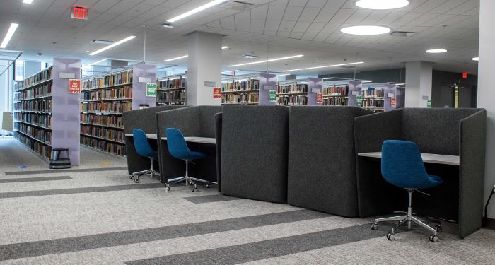

{% extends '_base.html' %}
{% block content %}
<div class="main">
    <div class="heading">
        Welcome to the Hillman Library
    </div>
	<div class="headhillman">
        <br>
        The puzzle is to find a few hidden items in the pictures presented!
        <br>
        <h4>Puzzle 3: Exit Sign</h4>
        <br>
		<!-- We know that you put an extreme amount of effort while escaping the Panther Central. Also, Hillman Library is very big and it has many rooms and study spaces across five floors. So as a reward to your last task, instead of you finding the room where the map is hidden, we will take you to that room directly to save your time and get you to your class as soon as possible. Right when you hit the "Start" button below this description, you will find yourself in that room. From that point on, you will be by yourself.<br><br>
		Do you think you have what it takes to complete this task?<br> -->
	</div>
    <div class="map">
        
        <map name="image-map">
            <area target="" alt="" title="" href="../static/html/sennott-square.html" coords="128,30,97,9" shape="rect">
        </map>
    </div>
</div>
{% endblock %}